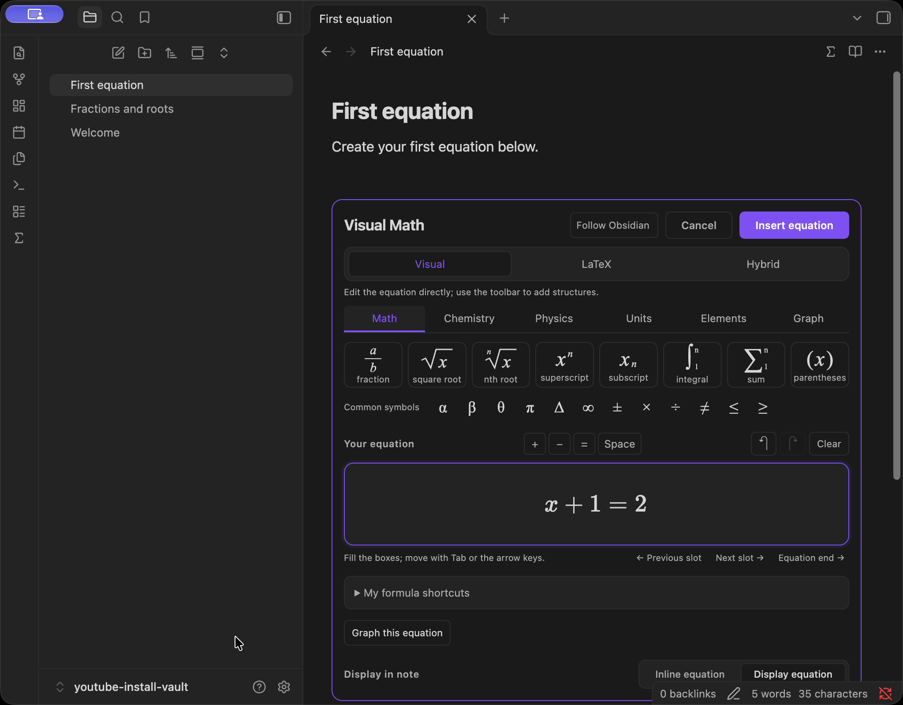
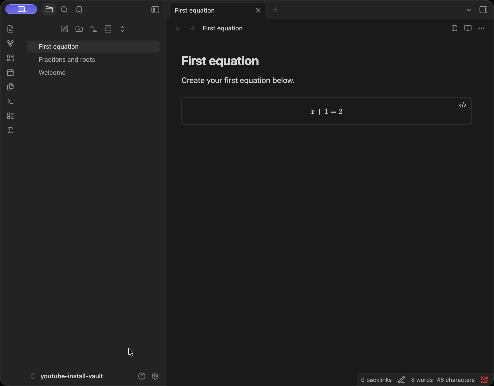

Write it your way.
Build a fraction visually. Edit the LaTeX directly. Use Hybrid to see both together, with one equation draft.
VisualLaTeXHybrid
Turn the ideas in your head into equations in your notes. Write visually, work in LaTeX, and explore graphs — right inside Obsidian.
Obsidian 1.14.4+ · Desktop only · By Oliver

THINK ON THE PAGE
Keep the working where it belongs.
Alongside your thoughts, in your own vault.
Build a fraction visually. Edit the LaTeX directly. Use Hybrid to see both together, with one equation draft.
Preview supported functions from the current equation. Explore polar curves, complex points and explicit XYZ wireframes too.
Numerical graphing within supported domains; not a general equation solver.
Insert the equation and graph into your note. They become independent blocks. Choose Save view to keep graph navigation changes.

A QUICK LOOK INSIDE
Real Obsidian footage.
Visual Math 0.8.2 · Public beta.
On screen: visual formula editing, a function graph, an XYZ wireframe, and installation in Community plugins. No narration; optional background music.
Watch on YouTubeProduct overview · 29 seconds · V5. Step-by-step lessons are preparing; start with the written guide.
A TOOLKIT FOR SCIENTIFIC NOTES
From a lecture note to a lab notebook,
keep your notation close to your thinking.
Insert and reopen inline or display LaTeX formulas, including fractions, roots, scripts, integrals and sums.
Unknown macros and complex TeX may require source editing.
Plot supported explicit y=f(x), r=f(theta), z=f(x,y), and rectangular complex points locally.
Numerical approximations; no general implicit/parametric solver, symbolic algebra, overlays or sliders.
First and second numerical derivatives and finite definite integration for supported real functions.
Not symbolic differentiation/integration; finite increasing continuous intervals only.
Format chemical notation, use bounded balance suggestions, insert physics symbols and editable templates.
Balance suggestions do not establish reaction feasibility; no molecular or physics simulation.
Convert among 63 preset unit choices in 11 categories; look up 118 elements.
Within-category preset conversion and local reference data; no arbitrary dimensional analysis.
Save up to 50 formula shortcuts per vault and expand them in Visual/Hybrid formatted input.
Keywords do not expand in ordinary notes or the LaTeX source pane.
Your workspace stays local. No runtime account or network connection is required. Downloading and installing the plugin needs access to its distribution source.
English · 简体中文 · Español
START HERE
Visual Math is an Obsidian desktop plugin.
Install it in the vault you want to use.
YOUR FIRST EQUATION
Use an editable Markdown note in
Obsidian’s desktop main window.
Click ∑ in the note header or ribbon. Choose Visual → Math → Fraction.
Enter 3, press Tab, then enter 4. Switch to LaTeX and append +1.
Choose Hybrid to see the source and formatted equation. Choose Insert equation.
Close the note tab and reopen it. Put the cursor inside the saved equation, then click ∑ to edit again. Choose it from the picker if prompted.
LEARN ONE THING AT A TIME
Start with installation, then build
your first equation and go from there.
Video tutorials are preparing. The installation and first-equation written guides are available now.
Find the correct plugin, install it and enable it in your vault.
Write a formula, insert it, then close and reopen the note.
Build structured notation with fractions and roots.
AN OPEN NOTEBOOK
Future scope and dates are not confirmed.
Discussion themes are marked Considering.
Last product review: October 19, 2026
Discussion themes only.
No confirmed work announced.
No confirmed work announced.
Consistent product naming and About byline.
LATEST RELEASE
Released October 18, 2026
0.8.2 unifies Visual Math / Oliver display metadata and the About byline. Editing, graphing and saved formats are unchanged from 0.8.1.
Read the release notesA FEW USEFUL DETAILS
Have a question or a reproducible issue?
Talk to us on GitHubVisual Math runs inside Obsidian on desktop. This website introduces the plugin and helps you install it in a vault.
This release requires Obsidian 1.14.4 or later and is desktop only. Native checks have used macOS with Obsidian 1.14.4. Windows and Linux have not been verified. Mobile is not supported.
No runtime account, API key or Node.js is required for the compiled plugin. The editor, bundled data and graph tools run locally. Downloading and installing requires access to the distribution source.
Live equation/graph preview is linked only while its editor is open. Saved formula and graph are separate blocks; navigation persists only when explicitly saved. Changing a saved equation later does not automatically update an existing graph. After moving, zooming or rotating a graph, explicitly choose Save view or Save graph to keep the changes.
Graphing and calculus use numerical methods within supported domains. They are not a general equation solver or symbolic algebra system. Numerical calculus is for supported real functions on finite, increasing, continuous intervals; results are approximations.
Unknown macros and complex TeX may need source editing. Use the LaTeX source view and check the expression. Visual editing does not support every TeX command.
Open a GitHub issue with your plugin version, Obsidian version, operating system and exact steps. Include a small example you are comfortable sharing. Check existing issues first.
GNU GPL version 3 only with the Obsidian linking exception. See the licensing details for the full terms and third-party notices.
THE NEXT IDEA IS YOURS
Obsidian 1.14.4+ · Desktop only · 0.8.2 Public beta